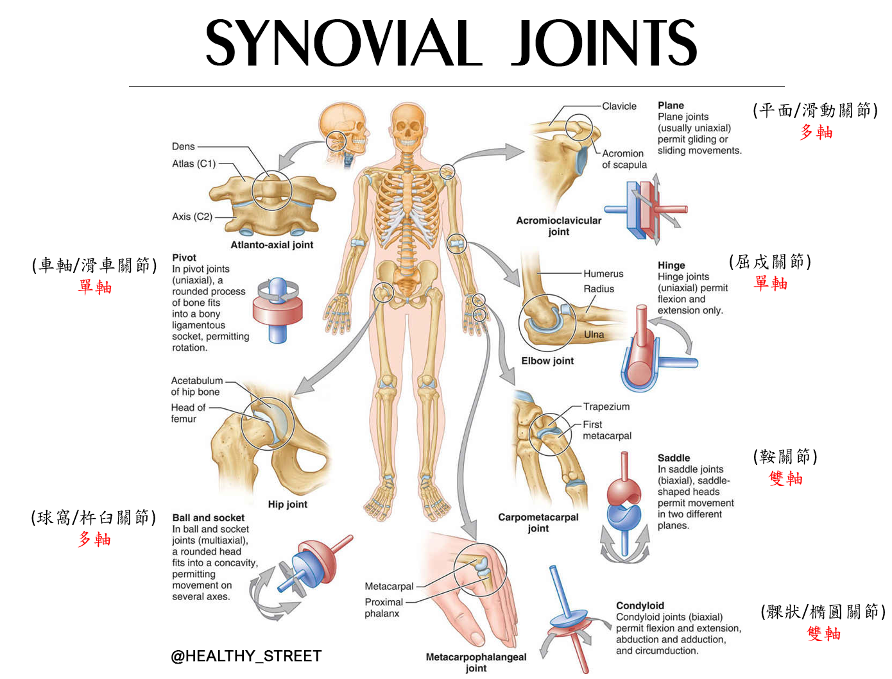
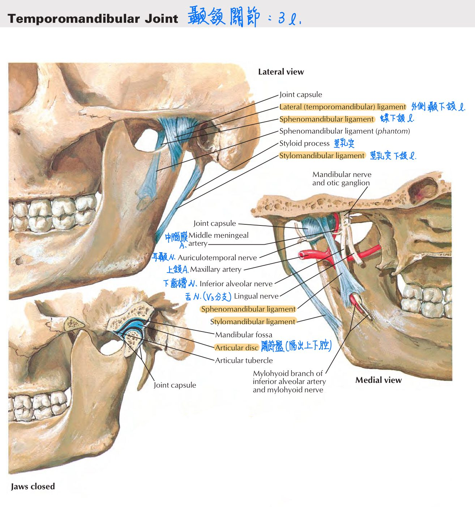
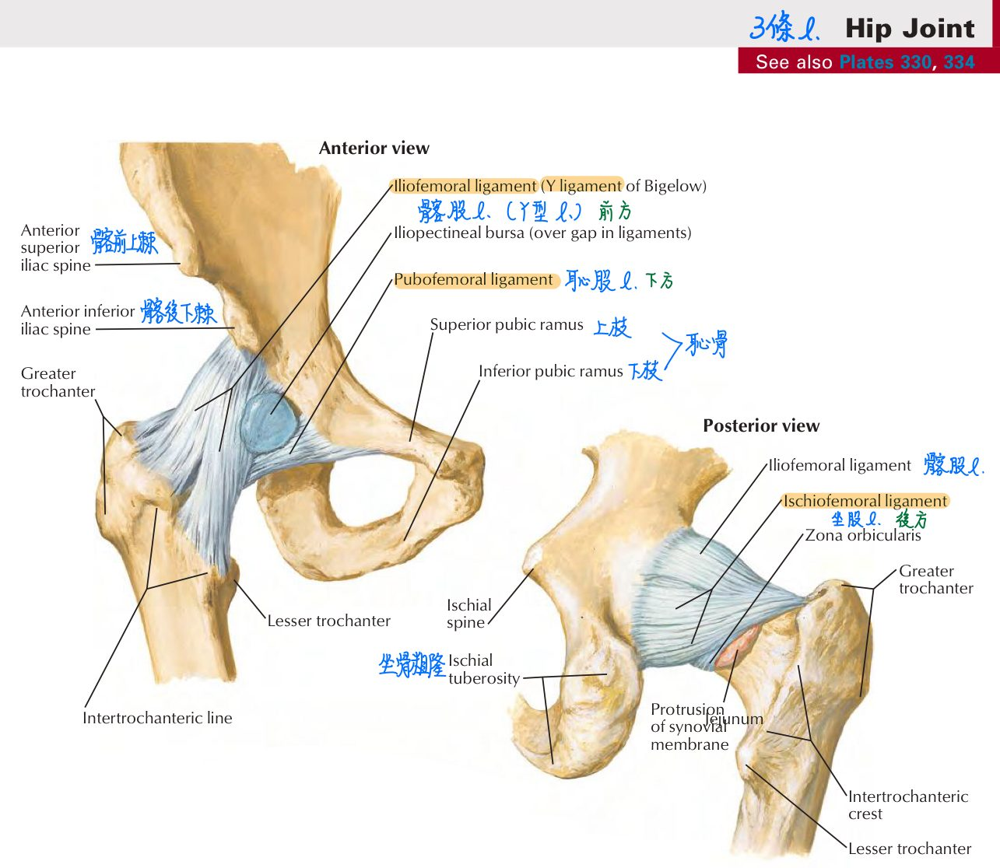
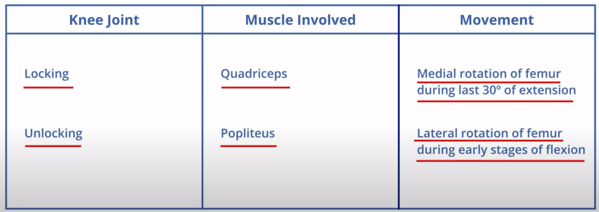
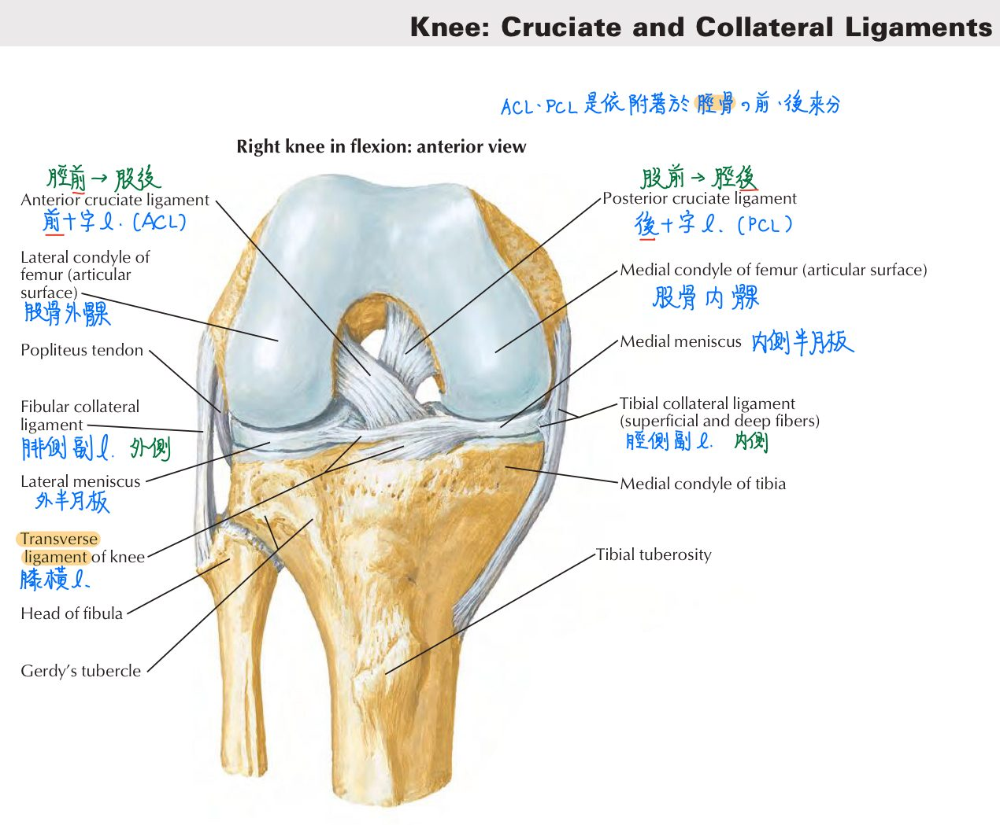

🦴 骨骼系統(重要關節)
關節分類 14-7
結構分類：
- 纖維性(fibrous)：
- 骨縫(suture)：不動。EX：頭骨間關節
- 韌帶縫合(syndesmosis)：微動，EX：橈-尺骨 or 脛-腓骨之骨幹間關節
- 釘狀縫合(gomphosis)：不動。EX：齒根-齒槽關節
- 軟骨性(cartilaginous)：
- 軟骨結合：不動。EX：骨骺板
- 聯合：微動。EX：恥骨聯合、★[109-2]椎間盤、★[109-2]R1胸肋關節
- 滑液性(synovial)：最常見；可動，由關節囊(內含關節液)構成
→EX：★[109-2]R2~R7胸肋關節、★[109-2]胸鎖關節- 關節囊：
- 外層：纖維層(fibrous capsule)
- 和外骨膜的纖維層相連，可具韌帶or肌腱以強化關節
- 韌帶：骨頭-骨頭；肌腱：肌肉-骨頭
- 內層：滑膜層(synovial membrane)，可分泌滑液
- 滑膜層可形成滑液囊(bursa)，可減少摩擦
- 滑膜層並未覆蓋關節軟骨
- 外層：纖維層(fibrous capsule)
- 關節腔：含關節液(synovial fluid)
- 關節液富含玻尿酸，含少量WBC(以淋巴球為主)及蛋白質
- ★[110-2]具關節盤的關節：顳頷關節、胸鎖關節(應該常見的就這兩個，背起來！)
- 關節盤是位於關節腔中的纖維軟骨，並會分隔關節腔，因此關節可以完成不同方向的動作
- 關節囊：
功能分類：
- 不動：骨縫、釘狀縫合、軟骨結合
- 微動：韌帶縫合、聯合
- 可動：滑液性
- 單軸：具1個運動軸向
- ★★★屈戍(hinge)：踝關節、指(趾)間關節、肘關節 <tip：只能屈曲>
- 車軸(pivot)/滑車(trochoid)：寰樞關節(C1-C2)、近/遠端橈-尺關節、近/遠端脛-腓關節 <tip：一根棒子穿鐵片>→rotation
- 雙軸：具2個運動軸向
- 橢圓(ellipsoidal)=★髁狀(condyloid)：橈腕關節(腕關節)、掌指關節
- 鞍(saddle)：拇指的腕掌關節(大菱形骨-第一掌骨)
- 多軸：具多個運動軸向
- 球窩(ball and socket)=杵臼：髖關節、肩關節
- 滑動(gliding)=平面(plane)：胸鎖關節、腕骨間關節、跗骨間關節
- 單軸：具1個運動軸向

顳頷關節(temporal mandibular joint, TMJ)
- 顳頷關節(temporal mandibular joint, TMJ)：頭部唯一可動關節
- 構成：顳骨(下頷窩)-下頷骨(髁狀突)
- 關節腔：以關節盤(articular disc)隔出上下腔
- 關節盤：纖維性軟骨；前緣與外翼肌相連
- 上腔：for上頷骨前突、後縮
- 下腔：for下頷骨上關、下開
- 囊外韌帶(extracapsular l.)
- 外側顳下頷韌帶(lateral temporomandibular l.)：顳骨(關節結節)-下頷骨頸；限制下頷骨後縮—>防止撞擊外耳道
- 蝶下頷韌帶(sphenomandibular l.)：蝶骨(棘突)-下頷骨(小舌)；支撐下頷骨防止其搖晃
- 莖乳突下頷韌帶(stylomandibular l.)：顳骨(莖乳突)-下頷骨角；輔助下頷骨運動

肩關節/盂肱關節(glenohumeral joint)
- 肩關節/盂肱關節(glenohumeral joint)：大部分關節固定主要靠韌帶；只有肩關節固定主要是靠肌肉
- 特點：全身活動度最大的關節；最易脫臼的關節
- 構造：肱股頭-肩胛骨(關節盂)；屬於球窩關節
- 固定主力：肩旋轉袖口肌群(rotator cuff) →肩胛下肌、棘上肌、棘下肌、小圓肌
- 支持韌帶：3條
- 盂肱韌帶(glenohumeral l.)：肩胛骨(關節盂)-肱骨(小結節)
- 喙肱韌帶(coracohumeral l.)：肩胛骨(喙狀突)-肱骨(大結節)
- 肱骨橫韌帶(transverse humeral l.)：肱骨(大結節)-肱骨(小結節)
- 血液供應：前/後環肱A、肩胛上A
- 神經支配：腋下N、肩胛上N、外胸肌N(lateral pectoral nerve)

肘關節&腕關節
- 肘關節：(=肱尺關節+肱橈關節)
- 構造：
- 肱尺關節(屈戍關節)：肱骨(滑車)-尺骨(滑車切跡)
- 肱橈關節(屈戍關節)：肱骨(肱骨小頭)-橈骨(橈骨頭)
- 支持韌帶：3條
- 環韌帶(annular l.)：最重要
- 尺側副韌帶(ulnar collateral l.)：尺神經位於內上髁後方並跨越尺側副韌帶
- 橈側副韌帶(radial collateral l.)
- 構造：
腕關節(橈腕關節)：
- 構造：橈骨、舟狀骨、月狀骨構成；屬於橢圓關節(可做2方向動作)
髖關節
- 髖關節：
- 構造：股骨頭-髖臼；屬於球窩關節
- 支持韌帶：
- 髖臼橫韌帶(transverse acetabular l.)：髖臼切跡(acetabular notch)的橫向連結
- 股骨頭韌帶(femoral head l.)：股骨頭-髖臼窩；內含閉孔動脈分支
- 外表面：3條
- 髂股韌帶(iliofemoral l.)：Y形韌帶；位於前方；髂骨前下棘-股骨大小轉子間線
—>固定髖關節最大、最重要的韌帶
- 恥股韌帶(pubofemoral l.)：下方
- 坐股韌帶(ischiofemoral l.)：後方
- 髂股韌帶(iliofemoral l.)：Y形韌帶；位於前方；髂骨前下棘-股骨大小轉子間線
- 血液供應：6條
- 閉孔A
- 轉子吻合(trochanteric anastomosis)：上臀A.、下臀A.、內側/外側環股A
- 十字吻合(cruciate anastomosis)：下臀A.、內側/外側環股A、深股A第一穿透支
- 神經支配：股N、閉孔N、上臀N、股方肌N

膝關節
- 膝關節：全身體積最大之關節
- 構成：股+髕+脛(沒有腓骨)
- 股髕關節(滑動關節)+股脛關節(屈戍關節)
- 關節囊(joint capsule)：外層=纖維層(fibrous layer)
內層=滑膜膜(synovial membrane)
- 血液供應：膝部吻合(genicular anastomosis)，由股A.、膝膕A.、脛前A.的分支形成
- 特化結構：
- 半月板(meniscus)：位於關節囊&滑液膜內
- 呈C形；為★纖維性軟骨—>加深關節腔深度&減緩衝擊力
- 內半月板：附著於內側副韌帶；移動性較小
- 外半月板：未附著於外側副韌帶；移動性較大；與膕肌肌腱相連
- 膝橫韌帶(transverse knee l.)：連接內、外半月板之前方
- 十字韌帶(cruciate l.)：位於關節囊內、滑液膜外
- 前十字韌帶(ACL)：脛前-股後(髁間窩外壁)
於膝關節伸展時拉緊—>防脛骨前脫位(股骨後脫位)
- 後十字韌帶(PCL)：脛後-股前(髁間窩內壁)
於膝關節屈曲時拉緊—>防脛骨後脫位(股骨前脫位)
- 前十字韌帶(ACL)：脛前-股後(髁間窩外壁)
- 支持韌帶：位於關節囊外、滑液膜外
- 脛側副韌帶(tibial collateral l.=內側副韌帶)：防小腿內脫位(外展)
—>膝關節外側遭撞擊時易受損(理解：遭撞擊—>另一側會受損)
備註
脛骨頂端向內滑動=內脫位
<cf>肱骨頂端向前滑動→肩關節前脫位
(判斷脫位方向：看關節下方那根骨頭頂端往哪裡移動)- 腓側副韌帶(fibular collateral l.=外側副韌帶)：防小腿外脫位(內收)
—>膝關節內側遭撞擊時易受損
- 斜膕韌帶(oblique popliteal l.)：半膜肌肌腱的延伸—>強化後方
- 髕韌帶：縱向—>強化前方
- 脛側副韌帶(tibial collateral l.=內側副韌帶)：防小腿內脫位(外展)
- 半月板(meniscus)：位於關節囊&滑液膜內
- knee locking & unlocking mechanism：
- 膝關節鎖緊(lock)：股四頭肌(內旋股骨)
- 膝關節鬆開(unlock)：★膕肌(外旋股骨)

- (重點)unhappy triad：常見的膝關節合併損傷
→內半月板、內側副韌帶、前十字韌帶皆受損
- 滑液囊(Synovial bursa)：膝關節具全身最大、最廣泛的滑液囊
- ★由以下肌腱形成：髂脛束、股二頭肌、半膜肌、鵝掌腱(辦腱肌、股薄肌、縫匠肌)、腓腸肌內&外側頭、fibular collateral ligment
- 前方：髕上滑液囊(suprapatellar)、髕前滑液囊(prepatellar)、淺髕下滑液囊(superficial infrapatellar)、深髕下滑液囊(deep infrapatellar)
- 後方：膝膕滑液囊(popliteal)、半膜肌滑液囊(semimembranous)
- 構成：股+髕+脛(沒有腓骨)

踝關節
- 踝關節：在處於背屈(dorsiflexion)姿勢時最穩定(因為距骨前方較寬)
- 構造：脛骨(內髁)+腓骨(外髁)+距骨；屬於屈戍關節
- 支持韌帶：(考N次)
- 內韌帶=三角(deltoid)韌帶：3條
—>脛距韌帶(tibiotalar)、脛舟韌帶(tibionavicular)、脛跟韌帶(tibiocalcaneal)
- 外韌帶：2條
—>距腓韌帶(talofibular)、跟腓韌帶(calcaneofibular)
- 內韌帶=三角(deltoid)韌帶：3條
- 內翻(inversion=內收+旋後)、外翻(eversion=外展+旋前)：
- 內翻、外翻是由距下&橫跗關節完成(不是踝關節)
- 距下關節(subtalar)：距-跟骨
- 橫跗關節(transverse tarsal)：
- 內側：距-跟-舟狀骨
- 外側：跟-骰子骨
- 踝部常見傷害：
- 外踝扭傷(外韌帶扭傷)：過度內翻
- 腓骨外踝骨折：過度外轉(external rotation)

📖 書本補充：與筆記不同或筆記沒寫到的地方
⚠️
以下為對照書本後整理，筆記原文未更動。標「筆記 vs 書」的是兩邊寫法不同、建議回頭確認的地方。髖、膝、踝關節（書 p.371–376）的補充與考題放在「骨骼系統(下肢&足弓)」頁，避免重複。
滑液關節的類型（p.108）
- 書上的分類與代表例子：
- 平面（plane）：通常是單軸、滑動；例：肩峰鎖（acromioclavicular）關節。
- 車軸（pivot）：單軸、旋轉；例：寰椎與樞椎之間、近端橈尺關節。
- 屈戍（hinge）：單軸、屈曲與伸展；例：肘、踝、膝（大部分）。
- 鞍狀（saddle）：雙軸（互相垂直），關節面一凹一凸；可屈伸、內收外展、迴轉；例：第 1 掌骨與大多角骨之間的腕掌關節。
- 髁狀（condyloid）：雙軸；動作同鞍狀，但迴轉的程度比鞍狀還侷限；例：掌指關節。
- 杵臼（ball-and-socket）：多軸；例：肩和髖。
- 筆記 vs 書：筆記把滑動（平面）關節放在「多軸」，代表例子寫胸鎖關節；書上寫平面關節通常是單軸、例子是肩鎖關節，而胸鎖關節書上歸為鞍狀關節（見下方 p.332）。
- 書的提示：車軸關節的動作是旋轉，在空間中畫出圓柱體；屈戍關節就像開關門，是單軸動作。
胸鎖、肩、肘及腕關節（p.326、p.332–333）
- 胸鎖關節：鞍狀，關節內有關節盤隔開；作用類似杵臼關節；是上肢和中軸骨間唯一的關節。
- 筆記 vs 書：具關節盤的關節，筆記寫「顳頷關節、胸鎖關節（常見的就這兩個）」；書在肩帶的提示寫肩鎖和胸鎖關節內皆有關節盤（纖維軟骨），顳頷關節也有。考題 110-2-31 的答案仍是「胸鎖＋顳頷」，因為其他選項（肩、髖）都沒有關節盤。
- 肩（盂肱）關節：
- 有盂唇（glenoid labrum）加深關節窩（筆記沒寫）。
- 盂肱韌帶與喙肱韌帶分別強化關節的前面和上方；書圖上盂肱韌帶分上、中、下三束。
- 肱橫韌帶固定肱二頭肌長頭的肌腱。
- 動作：屈曲、伸展、外展、內收、內旋、外旋及迴轉；大部分關節的力量來自旋轉肌套。
- 肘關節：書上分成兩部分——
- 屈戍：橈側與尺側副韌帶在外側及內側加強關節 → 屈曲和伸展。
- 樞軸（車軸）：環狀韌帶由尺骨環繞橈骨頭 → 旋前與旋後。
- 腕關節：髁狀（＝筆記的橢圓關節），由橈腕韌帶及側副韌帶支持；可屈曲、伸展、外展、內收及迴轉。
- 書的提示：屈戍關節也存在於膝和踝；樞軸關節的另一例是寰椎與樞椎之間；顳頷關節內也有關節盤。
顳頷（下頷）關節（p.529）
- 類型：滑液關節中的特殊屈戍關節。
- 組成（筆記沒寫的部分）：
- 位於下頷骨髁突的頭與顳骨的下頷窩及關節結節（articular tubercle）之間。
- 髁突頭的關節面是纖維軟骨，而非透明軟骨。
- 關節盤（纖維軟骨）把關節分成上、下兩腔。
- 盂後結節（postglenoid tubercle）防止往後脫臼。
- 被囊上有游離神經末梢。
- 囊外韌帶：
- 外側（顳下頷）韌帶：由關節結節往後下到下頷骨頸部；防止關節往後方脫臼（113-1-12 答案）。
- 蝶下頷韌帶：由蝶骨棘到下頷孔上方的小舌；書上說它是下頷骨運動的支點（筆記寫「支撐下頷骨防止搖晃」）。
- 筆記 vs 書：莖下頷韌帶的起點，筆記寫「顳骨（莖乳突）」；書上寫由莖突（styloid process）到下頷角。Claude 註：「莖乳突」應是筆誤，莖突與乳突是兩個不同的突起。
- 動脈供應（皆來自外頸A）：顳淺動脈、上頷動脈（深耳、鼓室前分支）、咽升動脈。
- 神經支配（皆 V3）：耳顳神經、顳深神經、嚼肌（咬肌）神經。
- 106-1-18 的重點：翼外肌收縮造成下頷骨前引（protrusion）；莖突下頷韌帶附著於下頷角、蝶下頷韌帶附著於下頷骨小舌（題目選項故意互換）。
📝 書中歷屆考題（點選答案作答）
101-1-7p.333
下列何者不屬於屈戍關節 (hinge joint)？
💡 肩關節是杵臼關節。
101-1-14p.333
腕關節 (wrist joint) 屬於下列何種關節？
101-2-22p.333
下列關節活動度中，何者最大？
💡 拇指腕掌關節是鞍狀關節，活動範圍比掌指關節（髁狀）和第五腕掌關節（平面）都大。
101-2-20p.334
手肘彎曲時，尺骨頭 (head of ulnar) 與下列何者接觸？
💡 尺骨頭在尺骨遠端，與橈骨的尺骨切跡形成遠端橈尺關節；冠狀窩接的是尺骨冠狀突（不是尺骨頭）。
106-1-8p.334
下列何者不是連接不同骨頭間的韌帶？
💡 喙突和肩峰都屬於肩胛骨。
110-2-31p.334、p.530
下列何者的兩種人體關節，都具有關節盤 (articular disc) 的構造？
💡 胸鎖關節的另一特點：上肢和中軸骨之間唯一的關節。（書上這題在 p.334 與 p.530 各印一次。）
106-1-18p.530
有關顳頷關節 (temporomandibular joint) 之敘述，下列何者正確？
💡 兩條韌帶的附著點分別是下頷角及下頷骨舌部（選項互換了）；關節盤是纖維軟骨。
113-1-12p.530
下列何者是防止顳頷關節 (temporomandibular joint) 向後方脫臼最重要的構造？
💡 顳頷韌帶由關節結節往後下連到下頷頸，可防止往後脫臼。